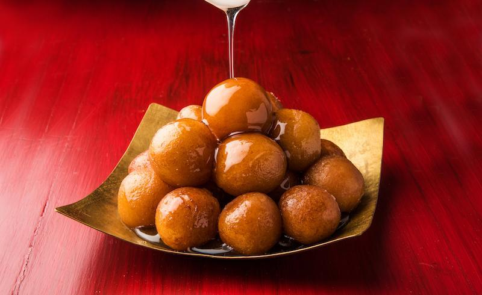
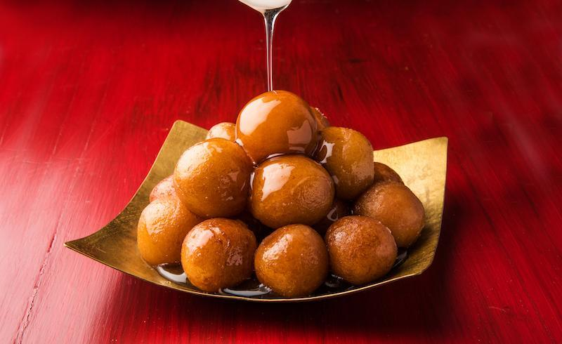
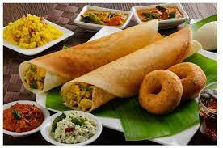
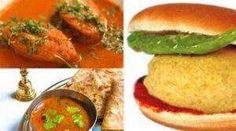
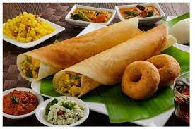
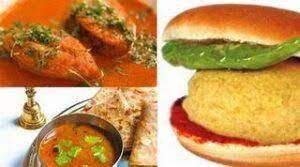

Indian cuisine consists of a variety of regional and traditional cuisines native to the Indian subcontinent. Given the diversity in soil, climate, culture, ethnic groups, and occupations, these cuisines vary substantially and use locally available spices, herbs, vegetables, and fruits.Historical events such as invasions, trade relations, and colonialism have played a role in introducing certain foods to this country. The Columbian discovery of the New World brought a number of new vegetables and fruits to India. A number of these such as potatoes, tomatoes, chillies, peanuts, and guava have become staples in many regions of India.
Indian cuisine has shaped the history of international relations; the spice trade between India and Europe was the primary catalyst for Europe's Age of Discovery.[4] Spices were bought from India and traded around Europe and Asia. Indian cuisine has influenced other cuisines across the world, especially those from Europe (especially Britain), the Middle East, Southern African, East Africa, Southeast Asia, North America, Mauritius, Fiji, Oceania, and the Caribbean. Wikipedia

 

 


